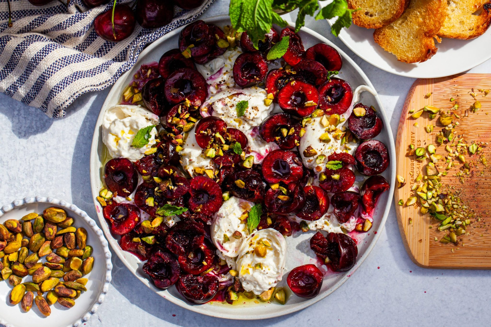

Ingredients:
- 1 pound (455 grams) burrata
- 1 pound (455 grams) fresh cherries
- Olive oil
- 1/3 cup (40 grams) salted, shelled pistachios
- A sprig or two of fresh mint
- Flaky sea salt
- Freshly ground black pepper
- Crostini for serving
Instructions:
- Prepare the burrata: Drain the burrata on a paper towel and let it come to room temperature for maximum creaminess. Tear into chunks and place on a serving platter.
- Crush the cherries: Use the side of a knife or the bottom of a glass to crush the cherries. Remove the pits and tear the cherries in half. Pour any accumulated cherry juices over the burrata.
- Prepare the pistachios: Coarsely chop the pistachios or crush them using the back of a heavy pan.
- Assemble: Drizzle the burrata and cherries with olive oil. Sprinkle the pistachios, flaky sea salt, black pepper, and fresh mint on top.
- Serve: Serve immediately with crostini and enjoy!
Go to Homepage